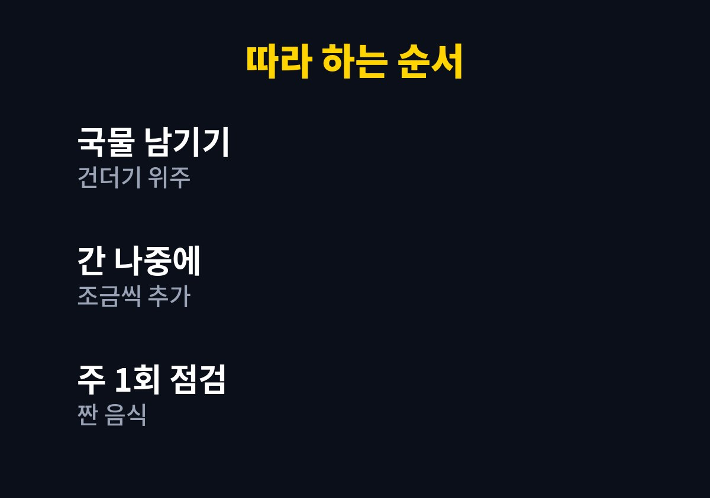

나트륨 줄이는 식단은 국물을 덜어내고 채소를 채우는 두 가지부터 시작하면 된다. 이 글은 국물과 배달 음식을 자주 먹어 짜게 먹는 습관이 걱정되는 사람을 위해 쓴 글이다.
온라인 쇼핑몰을 운영하며 끼니를 서둘러 해결하던 두 아이 아빠인 내가 직접 바꿔본 방법을 정리했다.
질병을 치료하는 식단이 아니라 일상에서 짠맛을 덜어내는 현실적인 기준을 다뤘다.
세계보건기구는 성인의 소금 섭취를 하루 5g 미만, 나트륨으로는 2,000mg 미만으로 권고한다.
2026년 11월 기준으로 내가 확인한 기준은 이 수치가 전부다.
한국인의 평균 섭취량이 이 기준을 넘는다는 보도도 여러 번 접했다.
그래서 막연한 걱정 대신 내 식단을 직접 점검해 보기로 했다.
나트륨을 많이 먹는 식습관은 혈압과 관련해 꾸준히 주의가 필요한 부분으로 알려져 있다.
나는 평소 짜게 먹는다는 자각이 거의 없었다.
다만 국물을 끝까지 마시는 습관만큼은 분명히 있었다.
이 글을 읽는 사람도 한 번쯤 떠올려 볼 만한 장면일 것이다.
외식이 잦은 자영업자와 직장인이라면 더욱 그렇다.
주문 처리와 포장 사이에 라면이나 찌개로 급하게 한 끼를 때우는 날이 많았다.
배달 음식을 시키면 국물까지 비워야 든든하다는 느낌이 있었다.
아이들 반찬을 따라 먹다 보니 김치와 젓갈도 늘 곁들이고 있었다.
하나하나는 작아 보여도 하루로 합치면 꽤 짠 식단이었다.
식후에 유난히 물이 당기고 얼굴이 붓는 느낌이 자주 들었다.
내 식사가 짜다는 신호일 수 있다고 생각해 식단을 하나씩 점검했다.
결국 가장 큰 원인은 한 번에 많이 먹는 국물과 가공식품이라고 판단했다.
이 두 가지만 손봐도 효과가 클 것이라는 계산이 섰다.
음식을 아예 끊는 것은 오래 가지 못한다고 판단해 먹는 방식을 바꿨다.
국물은 건더기 위주로 먹고 남은 국물은 마시지 않았다.
양념은 처음부터 한 번에 넣지 않고 맛을 보며 조금씩 더했다.
집에서 요리할 때는 식초나 후추처럼 향이 있는 재료로 맛의 빈자리를 채웠다.
채소와 과일을 반찬에 더 올려 짠 음식의 비중을 낮췄다.
가공식품은 포장지의 영양 성분표에서 나트륨 수치를 확인하고 골랐다.
같은 종류라도 제품마다 수치가 달라서 비교하는 재미도 있었다.
바꾼 내용을 표로 정리하면 아래와 같다.
| 식사 상황 | 이전 | 바꾼 뒤 |
|---|---|---|
| 찌개와 라면 | 국물까지 마심 | 건더기 위주로 먹음 |
| 양념 | 처음부터 넉넉히 | 맛을 보며 조금씩 |
| 가공식품 | 제품 확인 없이 구매 | 성분표 나트륨 확인 |
표처럼 먹는 방식만 바꿔도 부담이 훨씬 적었다.
음식 종류를 금지하기보다 먹는 방법을 조정하는 쪽이 오래 갔다.
부담 없이 하나씩 실천하면 된다.
1. 국물 요리는 건더기 위주로 먹고 국물은 남긴다.
2. 간은 처음부터 하지 않고 먹으면서 조금씩 더한다.
3. 가공식품을 고를 때는 영양 성분표의 나트륨을 확인한다.
4. 반찬마다 채소를 하나씩 더해 짠 음식의 비중을 낮춘다.
5. 한 주에 한 번 내가 먹은 짠 음식을 돌아본다.
처음부터 엄격하게 제한하면 금방 지치므로 줄이는 방향만 지키면 충분하다.
아이 식단은 성장 시기를 고려해 극단적으로 제한하지 않는 것이 좋다.

국물을 남기기 시작하니 식후에 물이 덜 당긴다고 느꼈다.
물론 체감은 사람마다 다를 수 있다.
입맛이 서서히 바뀌어서 예전 음식이 짜게 느껴지는 순간도 왔다.
한 번에 바꾸지 않고 두세 주에 걸쳐 천천히 적응한 점이 도움이 됐다.
고혈압이나 신장 질환 등 지병이 있다면 식단을 바꾸기 전에 의료진과 상담하는 것이 좋다.
오늘 한 끼 국물부터 남겨 보는 작은 시도를 권한다.
작은 습관이 쌓이면 한 달 뒤 식탁이 달라져 있을 것이다.
가족과 함께 먹는 식탁이라면 같이 시도해 보는 것도 방법이다.
※ 2026년 기준 개인 경험과 공식 기준을 바탕으로 정리한 일반 건강 정보이며, 증상이 계속되거나 지병이 있다면 전문의와 상담하시길 바란다.